7. Unconditional DPmix with Stick-Breaking Backend
Source:vignettes/legacy/v07-unconditional-DPmix-SB.Rmd
v07-unconditional-DPmix-SB.RmdLegacy vignette (for the website / historical notes). These files may not match the current exported API one-to-one. Last verified: 2026-01-18.
For the up-to-date workflow, see the main package vignettes (Introduction, Model Spec, MCMC Workflow, Unconditional/Conditional/Causal, Backends, S3 Reference).
Theory (brief)
The stick-breaking backend represents the DP mixture by truncating a
stick-breaking prior on mixture weights. This yields an explicit finite
mixture approximation controlled by components.
Unconditional DPmix: Stick-Breaking (SB) Backend
Purpose: Showcase the stick-breaking backend that
uses a fixed number of mixture components (components = J)
and contrast it with the CRP backend from v04. In this
vignette we fit two bulk kernels
(Gamma and Cauchy) on the same dataset
to highlight how heavier tails in the bulk can change the fit even
without a GPD tail.
Data Setup
# Load benchmark dataset
data("nc_pos200_k3")
y_mixed <- nc_pos200_k3$y
df_data <- data.frame(y = y_mixed)
summary_tbl <- tibble(
statistic = c("N", "Mean", "SD", "Min", "Max"),
value = c(length(y_mixed), mean(y_mixed), sd(y_mixed), min(y_mixed), max(y_mixed))
)
p_raw <- ggplot(df_data, aes(x = y)) +
geom_histogram(aes(y = after_stat(density)), bins = 30, fill = "darkorange", alpha = 0.7, color = "black") +
geom_density(color = "darkred", linewidth = 1.2) +
labs(title = "Raw Data: Mixed Gamma Distribution", x = "y", y = "Density") +
theme_minimal()
print(p_raw)
| statistic | value |
|---|---|
| N | 200.00 |
| Mean | 4.21 |
| SD | 4.11 |
| Min | 0.04 |
| Max | 19.60 |
Model Specification & Bundle
We build the stick-breaking mixture explicitly with
components = 5 so that there is room for weight decay while
keeping the MCMC runtime manageable for a vignette. We then refit the
same SB model with a Cauchy kernel for comparison.
# --- Gamma kernel ---
bundle_sb_gamma <- build_nimble_bundle(
y = y_mixed,
kernel = "gamma",
backend = "sb",
components = 5, # fixed truncation level for SB
GPD = FALSE, # bulk-only scenario
mcmc = mcmc
)
# --- Cauchy kernel ---
bundle_sb_cauchy <- build_nimble_bundle(
y = y_mixed,
kernel = "cauchy",
backend = "sb",
components = 5,
GPD = FALSE,
mcmc = mcmc
)Running MCMC & Summary
fit_sb_gamma <- load_or_fit("v07-unconditional-DPmix-SB-fit_sb_gamma", run_mcmc_bundle_manual(bundle_sb_gamma))
fit_sb_cauchy <- load_or_fit("v07-unconditional-DPmix-SB-fit_sb_cauchy", run_mcmc_bundle_manual(bundle_sb_cauchy))
summary(fit_sb_gamma)MixGPD summary | backend: Stick-Breaking Process | kernel: Gamma Distribution | GPD tail: FALSE | epsilon: 0.025
n = 200 | components = 5
Summary
Initial components: 5 | Components after truncation: 2
WAIC: 943.973
lppd: -411.197 | pWAIC: 60.789
Summary table
parameter mean sd q0.025 q0.500 q0.975 ess
weights[1] 0.602 0.176 0.374 0.558 0.894 1.321
weights[2] 0.218 0.105 0.059 0.21 0.385 2.44
alpha 1.149 0.761 0.183 0.97 2.912 27.606
shape[1] 1.713 0.519 0.846 1.691 2.862 9.736
shape[2] 1.679 0.726 0.846 1.434 3.164 25.181
scale[1] 0.38 0.266 0.186 0.296 1.439 26.281
scale[2] 1.114 0.705 0.212 1.054 3.166 27.342
summary(fit_sb_cauchy)MixGPD summary | backend: Stick-Breaking Process | kernel: Cauchy Distribution | GPD tail: FALSE | epsilon: 0.025
n = 200 | components = 5
Summary
Initial components: 5 | Components after truncation: 4
WAIC: 1003.512
lppd: -314.628 | pWAIC: 187.128
Summary table
parameter mean sd q0.025 q0.500 q0.975 ess
weights[1] 0.34 0.053 0.249 0.345 0.441 11.289
weights[2] 0.251 0.03 0.195 0.25 0.32 16.185
weights[3] 0.202 0.029 0.145 0.202 0.26 38.246
weights[4] 0.136 0.027 0.07 0.14 0.18 15.133
alpha 1.778 0.883 0.551 1.584 4.048 60.162
location[1] 3.441 1.944 1.952 2.648 8.28 16.425
location[2] 5.582 3.088 0.612 6.824 9.052 29.235
location[3] 2.46 2.891 0.52 1.158 9.606 49.872
location[4] 1.714 2.306 0.311 1.141 10.17 52.066
scale[1] 0.97 0.614 0.431 0.691 2.534 21.389
scale[2] 1.384 0.783 0.269 1.627 2.655 43.395
scale[3] 0.657 0.716 0.236 0.346 2.782 64.85
scale[4] 0.41 0.403 0.132 0.293 1.688 33.944
params_gamma <- params(fit_sb_gamma)
params_gammaPosterior mean parameters
$alpha
[1] "1.149"
$w
[1] "0.602" "0.218"
$shape
[1] "1.713" "1.679"
$scale
[1] "0.38" "1.114"MCMC Diagnostics (S3 Plot Methods)
plot(fit_sb_gamma, params = "shape", family = "traceplot")
=== traceplot ===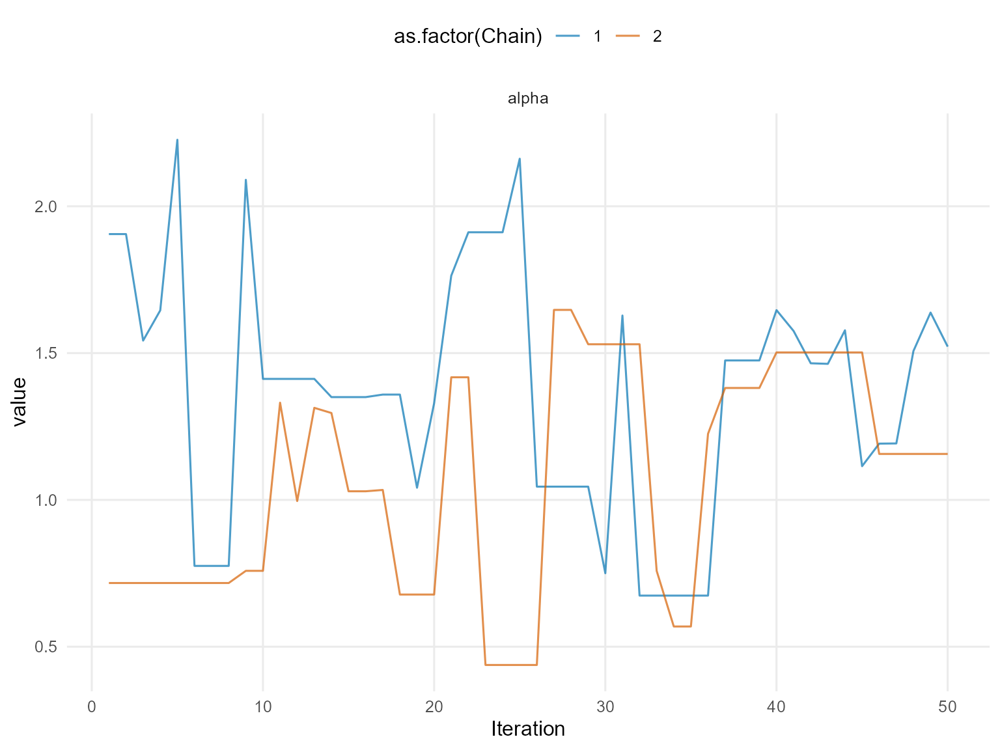
plot(fit_sb_gamma, params = "scale", family = "caterpillar")
=== caterpillar ===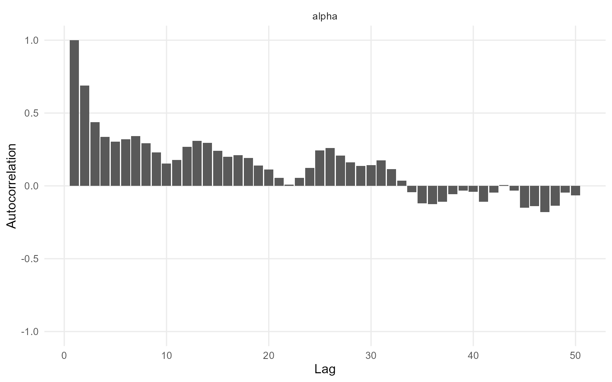
plot(fit_sb_cauchy, params = "location", family = "traceplot")
=== traceplot ===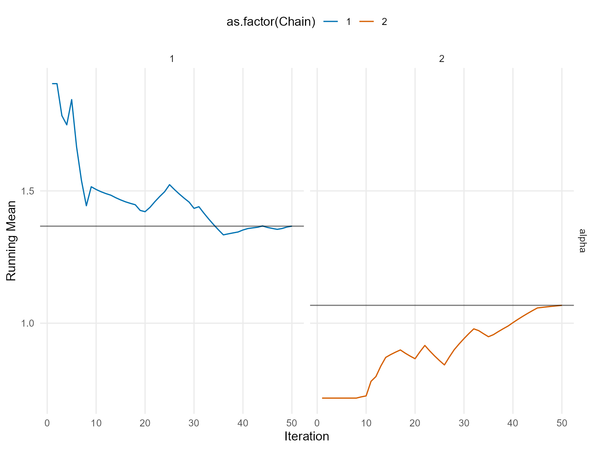
plot(fit_sb_cauchy, params = "scale", family = "caterpillar")
=== caterpillar ===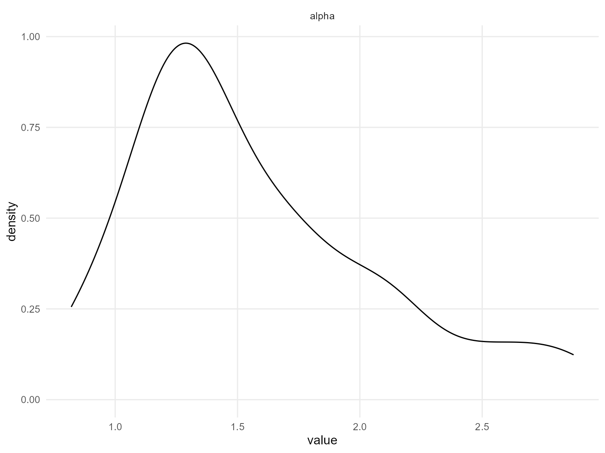
Use summary(fit_sb_gamma) and
summary(fit_sb_cauchy) to inspect effective sample size,
R-hat, and other convergence diagnostics; the plot() calls
above show the trace/density pairs for both global and stick-breaking
weight parameters.
Stick-Breaking Weights & Component Activity
The stick-breaking weights are exposed via the plot()
diagnostics above, and you can refer to the raw
fit_sb_gamma / fit_sb_cauchy objects (or their
summary() output) for posterior summaries of each component
weight.
Posterior Predictions
y_grid <- seq(min(y_mixed), max(y_mixed) * 1.3, length.out = 250)
pred_density_gamma <- predict(fit_sb_gamma, y = y_grid, type = "density")
pred_density_cauchy <- predict(fit_sb_cauchy, y = y_grid, type = "density")
plot(pred_density_gamma)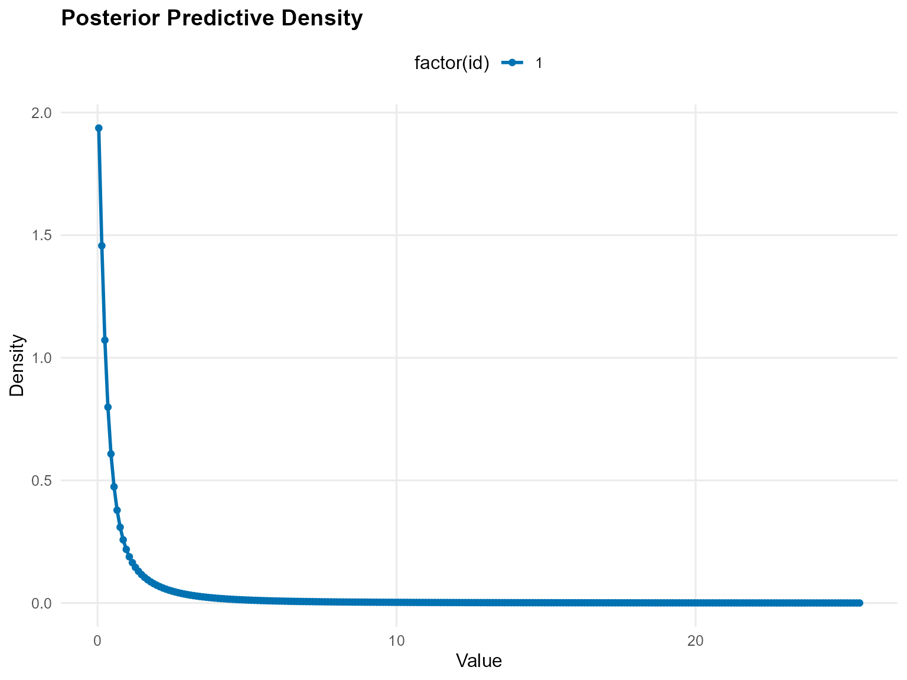
plot(pred_density_cauchy)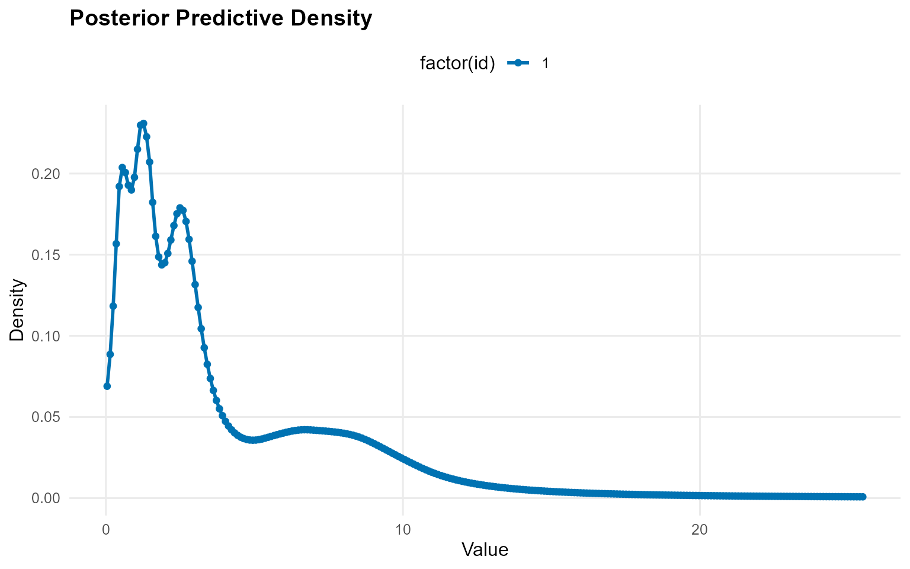
quant_probs <- c(0.05, 0.25, 0.5, 0.75, 0.95)
pred_q_gamma <- predict(fit_sb_gamma, type = "quantile", index = quant_probs, interval = "credible")
pred_q_cauchy <- predict(fit_sb_cauchy, type = "quantile", index = quant_probs, interval = "credible")
plot(pred_q_gamma)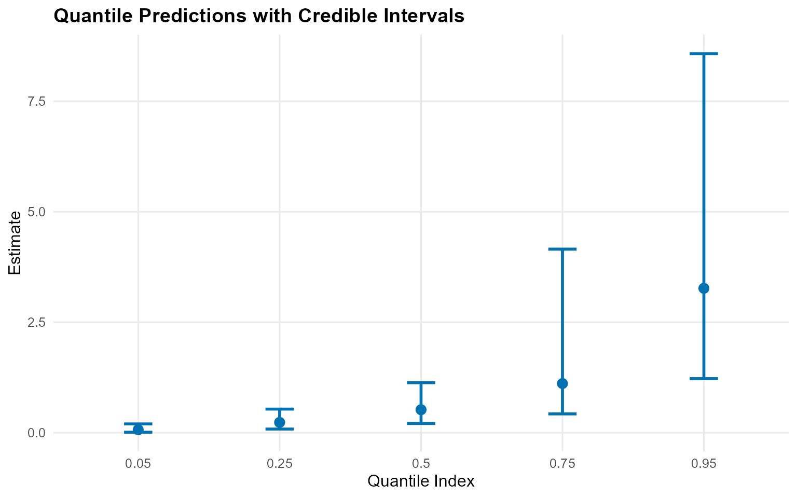
plot(pred_q_cauchy)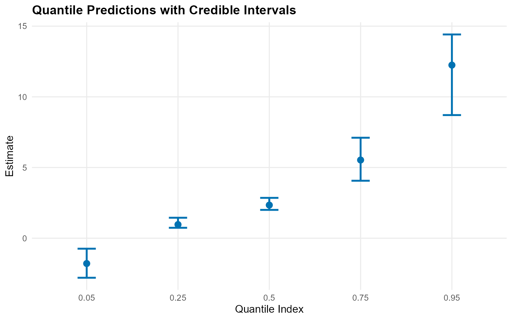
pred_mean_gamma <- predict(fit_sb_gamma, type = "mean")
pred_mean_cauchy <- predict(fit_sb_cauchy, type = "mean")
plot(pred_mean_gamma)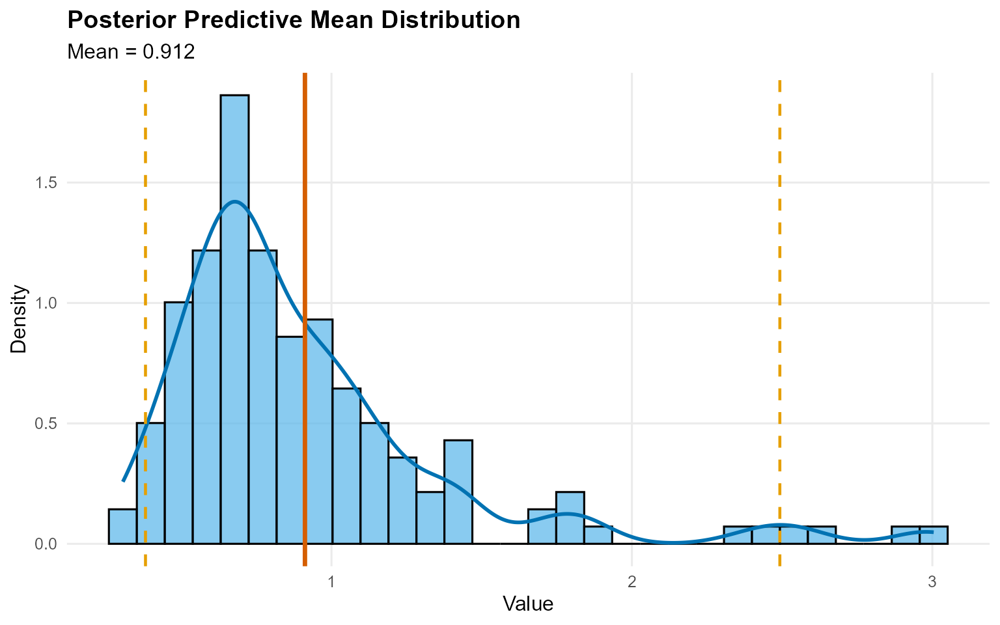
plot(pred_mean_cauchy)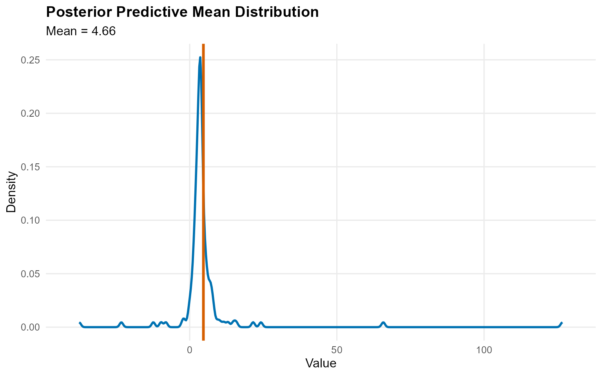
Bulk-only vs CRP Backends
bundle_crp_small <- build_nimble_bundle(
y = y_mixed,
kernel = "gamma",
backend = "crp",
components = 5,
GPD = FALSE,
mcmc = mcmc
)
fit_crp_small <- load_or_fit("v07-unconditional-DPmix-SB-fit_crp_small", run_mcmc_bundle_manual(bundle_crp_small))
crp_quant <- predict(fit_crp_small, type = "quantile", index = quant_probs, interval = "credible")
sb_quant <- predict(fit_sb_gamma, type = "quantile", index = quant_probs, interval = "credible")
bind_rows(
crp_quant$fit %>% mutate(model = "CRP"),
sb_quant$fit %>% mutate(model = "SB")
) %>%
select(any_of(c("model", "index", "estimate", "lower", "upper"))) %>%
mutate(across(where(is.numeric), ~ round(.x, 3))) %>%
kable(caption = "Quantile Comparison: CRP vs SB", align = "c") %>%
kable_styling(bootstrap_options = c("striped", "hover"), full_width = FALSE, position = "center")| model | index | estimate | lower | upper |
|---|---|---|---|---|
| CRP | 0.05 | 0.017 | 0.008 | 0.030 |
| CRP | 0.25 | 0.086 | 0.054 | 0.130 |
| CRP | 0.50 | 0.197 | 0.136 | 0.281 |
| CRP | 0.75 | 0.381 | 0.274 | 0.522 |
| CRP | 0.95 | 0.800 | 0.607 | 1.057 |
| SB | 0.05 | 0.067 | 0.011 | 0.199 |
| SB | 0.25 | 0.233 | 0.083 | 0.535 |
| SB | 0.50 | 0.521 | 0.208 | 1.132 |
| SB | 0.75 | 1.112 | 0.426 | 4.154 |
| SB | 0.95 | 3.268 | 1.224 | 8.578 |
plot(crp_quant)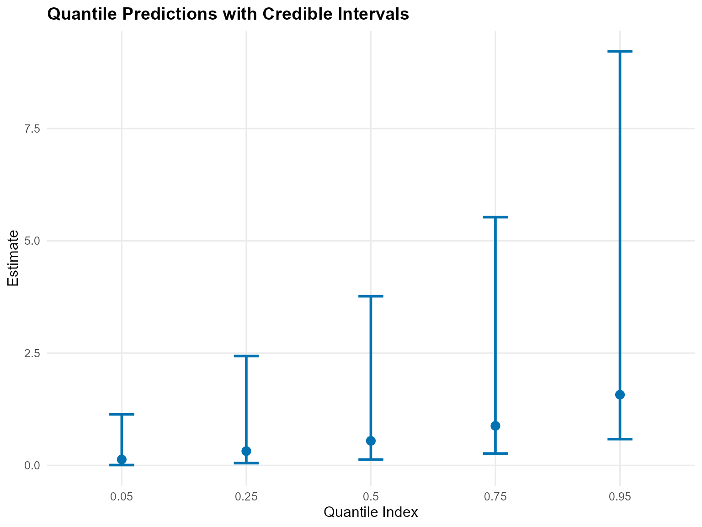
plot(sb_quant)
Takeaways
-
SB Backend: Fixed
componentskeeps label-switching manageable, and the diagnostic plots via the S3plot()method show weight dynamics. - Kernels matter: Gamma vs Cauchy can behave very differently in the shoulders/tails, even without a GPD tail.
-
Predictions: Posterior density, posterior-mean
quantiles, and mean (via predictive sampling) are accessible via
predict()with credible bands. -
Backend comparison: The CRP fit (
v04) and the SB-gamma fit deliver similar central quantiles while SB offers more control over truncation. -
Next: Explore tail augmentation
(
GPD = TRUE) with the CRP backend inv06or SB backend inv07.